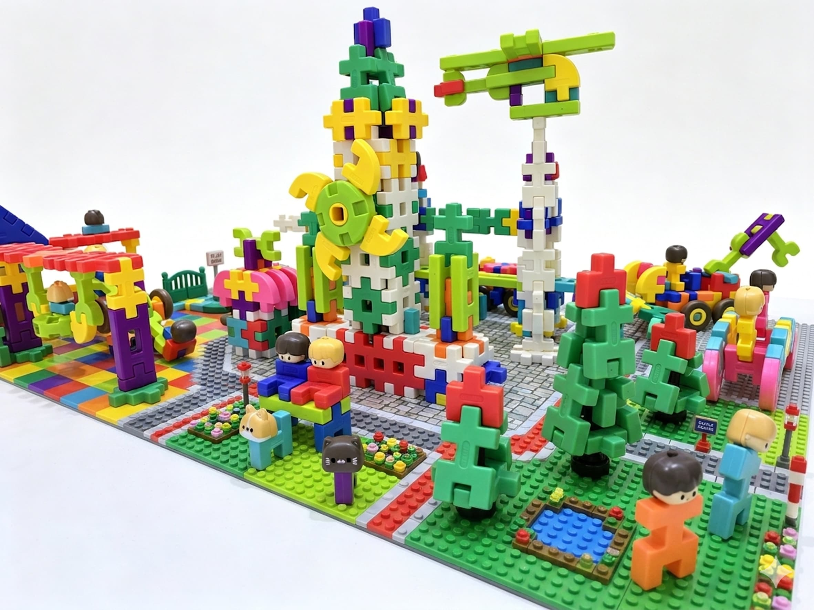
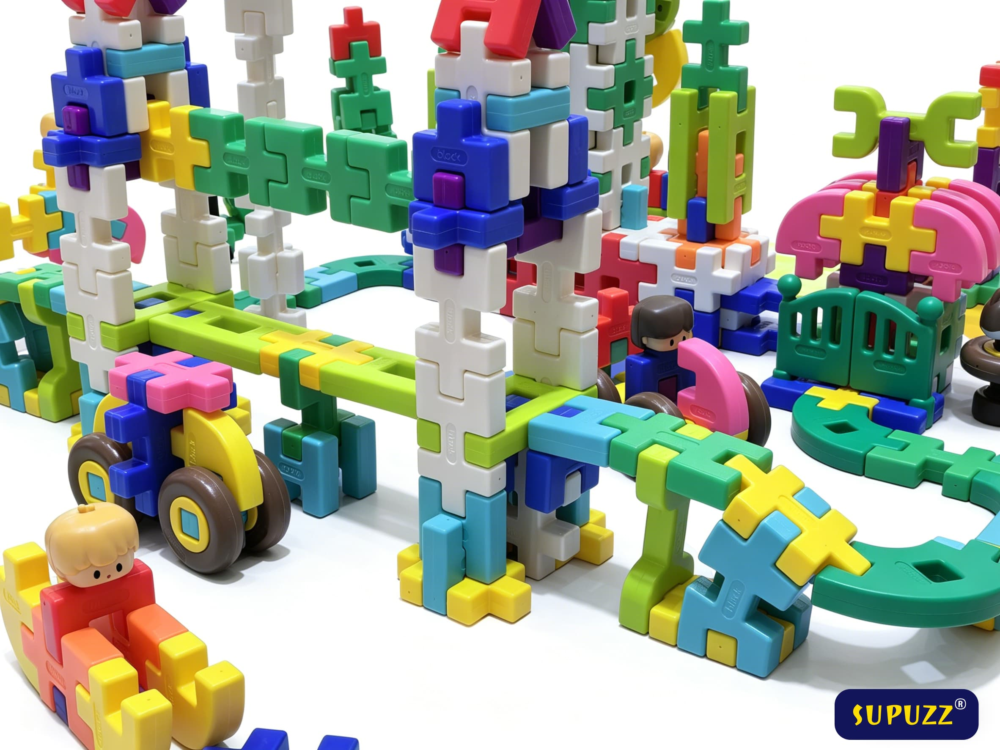

Entra en casi cualquier aula preescolar y todavía encontrarás una tina de bloques interlocking estilo waffle. Eso no es nostalgia—es ciencia motora. El mismo clic predecible que te ayudó a construir una "torre waffle" cuando eras niño todavía ayuda a los niños pequeños a practicar la coordinación bilateral, la graduación del agarre y el razonamiento espacial temprano.
El set de Bloques de Construcción Premium Arcoíris de SUPUZZ trae ese patrón de juego clásico con una sensación duradera y de fácil encaje, y un rango de construcción progresivo para niños de aproximadamente 2–8 años—para que el juguete no quede obsoleto después de un solo fin de semana.
Lo que enseñan los bloques waffle antes de que "STEM" sea incluso una palabra
Mucho antes de que los niños digan palabras como "ingeniería", ensayan lo básico: apilar, equilibrar, apuntalar, repetir. Los conectores waffle recompensan las pequeñas correcciones. Cuando una pared se inclina, un niño ajusta el ancho o añade un contrafuerte. Ese ciclo es exactamente cómo se siente la resolución de problemas temprana en el cuerpo—no en una hoja de trabajo.
- Control motor fino: empujar las piezas juntas sin derribar toda la construcción.
- Lenguaje espacial: "alto", "ancho", "esquina" y "atravesar" aparecen naturalmente en el juego compartido entre hermanos.
- Persistencia: una torre derrumbada es de bajo riesgo; reconstruir es parte del juego.


Por qué los padres todavía eligen construcción abierta sobre kits de un solo uso
Los kits de modelos de un solo uso pueden ser mágicos el día uno—y polvorientos el día siete. Una paleta generosa de colores invita a ordenar por color, crear patrones y construcciones narrativas (zoológicos, garages, "parques infantiles imaginarios"). Esa variedad mantiene los juguetes de construcción abiertos en rotación sin necesidad de un reinicio constante de los adultos.
Cuando estés listo para mantener las piezas contenidas entre sesiones, una caja de almacenamiento con cerradura importa tanto como los bloques mismos. La limpieza es la diferencia entre "jugamos con esto todos los días" y "vive en el armario".
Compra el set Premium Arcoíris destacado
El mismo juego estilo waffle que los padres confían—actualizado para durabilidad, progresión y portabilidad.
Ver en Amazon open_in_newCombina el lenguaje STEM con lo que los niños ya están haciendo
No necesitas un plan de lección. Intenta narrar lo que ves: "Hiciste una base estable primero—eso es como piensan los ingenieros." O invita a una pequeña revisión de diseño: "¿Qué haría el puente menos tembloroso?" Esas micro-prompts conectan vocabulario con movimiento, que es cómo los hábitos STEM realmente se consolidan.
Para un recorrido más profundo del producto—incluyendo ideas de proyectos progresivos—lee nuestra historia completa de los Bloques de Construcción Premium Arcoíris, luego regresa al listado de Amazon para precios en vivo y disponibilidad.
❓ Preguntas Frecuentes Sobre Bloques Waffle y STEM de Niños Pequeños
P: ¿Por qué elegir bloques estilo waffle en lugar de bloques de construcción regulares?
Los bloques waffle tienen una superficie de conexión más amplia y un encaje satisfactorio que es más fácil para que los niños pequeños alineen. Recompensan las pequeñas correcciones y enseñan naturalmente conceptos como equilibrio y estabilidad a través de experimentación práctica.
P: ¿Qué habilidades STEM específicas enseñan estos bloques a los niños pequeños?
Coordinación bilateral (usando ambas manos), graduación del agarre, vocabulario espacial (alto/ancho/esquina/atravesar), razonamiento temprano de causa y efecto, y persistencia. Estas son las habilidades fundamentales que después se traducen a preparación para ingeniería y matemáticas.
P: ¿Los bloques waffle son seguros para niños menores de 3 años?
Los bloques waffle SUPUZZ están hechos de materiales libres de BPA y no tóxicos con piezas de tamaño más grande. Están diseñados para edades 2+, pero siempre se recomienda supervisión parental para los constructores más pequeños.
P: ¿En qué se diferencia el juego abierto de la construcción basada en instrucciones?
El juego abierto permite a los niños crear sus propios diseños sin seguir instrucciones. Este tipo de libertad creativa desarrolla el pensamiento divergente, la imaginación y la confianza—habilidades que los kits de modelos de un solo uso no pueden replicar.